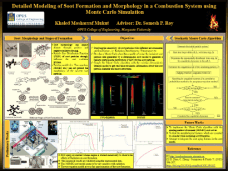

Dated: February 15, 2026
Paper on Soot Surface Features Accepted in Fuel
The paper "Elucidating pore and surface features of soot nanoparticles using molecular dynamics simulations" has been accepted in Fuel. This work establishes quantitative relationships for predictive engineering models regarding soot porosity and surface morphology at the molecular level, helping to refine current soot growth models.(Links: ScienceDirect / Preprint)
Dated: October 20, 2025
Joined CCL as Postdoctoral Research Fellow
I am excited to announce that I have joined the Computational Combustion Lab (CCL) at Marquette University as a Postdoctoral Research Fellow. In this role, I will be leading research efforts on advanced microclimate modeling at a city-block scale and developing a novel CFD framework for optimizing load balancing in large-scale Lagrangian-Eulerian systems within an HPC environment.
Dated: July 23, 2025
SAGE ML Model Paper Accepted in Proc. Combust. Inst.
Introducing SAGE (Soot Aggregate Geometry Extraction), a novel machine learning model designed to automate the segmentation of primary particles in TEM images. Published in the Proceedings of the Combustion Institute, this tool significantly improves the efficiency and accuracy of soot morphology analysis compared to traditional manual methods. (Links: ScienceDirect / Preprint)
Dated: June 23, 2025
Successfully defended my PhD dissertation
I am pleased to announce the successful defense of my PhD dissertation titled "Fundamental Exploration of Soot Formation and Morphology from a Molecular Modeling Perspective". My research utilizes reactive molecular dynamics (RMD) to investigate the physicochemical properties of incipient soot, bridging the gap between theoretical predictions and experimental results.
Links: Download Dissertation (PDF) View Interactive Summary
Dated: April 15, 2025
Paper on Soot Precursors published in Aerosol Research
Our paper titled "Investigation of soot precursor molecules during inception by acetylene pyrolysis using reactive molecular dynamics" has been published. We elucidate the transition from small hydrocarbons to incipient soot particles using ReaxFF MD simulations, offering new insights into the chemical evolution of soot precursors. (Links: Aerosol Research / Preprint)
Dated: December 14, 2024
Announcing ChronoCode: A Secure 2FA Solution
Introducing ChronoCode – a simple, open-source TOTP generator for secure two-factor authentication (2FA). Access it via the progressive-web-app (PWA) or install it on Chromium-based browsers and Firefox. Find the source code on GitHub. Stay secure with ChronoCode!
Dated: October 01, 2024
Paper on Soot Evolution Accepted in Fuel
This research provides detailed insights into the physical and chemical transformations of incipient soot particles using molecular dynamics simulations at various temperatures. The study introduces new classifications of soot particles and proposes correlations for better understanding their formation and growth. (Links: Fuel/Accepted manuscript)
Dated: June 18, 2024
Paper on Internal Structure of Incipient Soot Accepted in Journal of Physical Chemistry A
This study explores the detailed internal structure of soot particles formed during acetylene pyrolysis using molecular dynamics simulations. The findings provide new insights into the classification of soot particles based on their structural characteristics. (Links: JPC-A/Accepted manuscript)
Dated: February 06, 2023
Awarded Richard W. Jobling Distinguished Research Assistantship
Awarded a competitive fellowship (Richard W. Jobling Distinguished Fellowship) to conduct research on the impact of soot and particulate matter on air quality and climate change. For details, click here.
Dated: December 30, 2022
ENTANGLED AIR: An exhibition (January 20-May 21, 2022) that brings together the art of TOMÁS SARACENO and research done at CCL
The Haggerty Museum of Art at Marquette University is hosting an exhibition featuring the work of artist Tomás Saraceno, known for his large-scale installations and sculptures exploring the relationship between humans and the environment. The exhibition includes iconic works such as Saraceno's "cloud cities" and a site-specific installation. Located in Milwaukee, the exhibition is open to the public. For more information click here.
Media Coverage Links: Link-1, Link-2, Link-3, Link-4
Air Quality Data in Marquette Engineering Hall: kmmukut.github.io/EntangledAir/
Dated: February 17, 2022
Paper on post-processing code MAFIA-MD is accepted in Computer Physics Communications
Molecular Arrangement and Fringe Identification and Analysis from Molecular Dynamics (MAFIA-MD): A Tool for Analyzing the Molecular Structures Formed during Reactive Molecular Dynamics Simulation of Hydrocarbons. The paper on MAFIA-MD is accepted to be published in Computer Physics Communications (Impact Factor: 4.4). Find the latest version of MAFIA-MD from Github. (Links: COMPHY / Accepted manuscript)
Dated: April, 2021
Paper on soot coalescence is accepted in Carbon
My paper "The coalescence of incipient soot clusters" has been accepted in Carbon (Impact Factor: 8.8). This work is part of a collaboration between Dr. Eirini Goudeli of University of Melbourne and CCL. In this paper, the physics and chemistry of soot coalescence has been explored - for the first time - using molecular dynamics simulations. (Links: Carbon / Accepted manuscript)
Dated: November 02, 2020
Passed PhD proficiency exam
Passed PhD proficiency exam with specialization in Energy and Thermo-Fluid Systems from Department of Mechanical Engineering, Marquette University.
Dated: July 07, 2020
My paper is featured on CTM cover
A figure from my paper on Spray-A has been featured on the cover of Combustion Theory and Modelling, vol. 24(3). This paper presents a detailed study on the effect of multphase radiation and exhaust gas recirculation in soot and NOx formation in high-pressure engine-relevant conditions. (Visit CTM/Researchgate)
Dated: January 16, 2020
Paper accepted in CTM
My paper on Spray-A has been accepted in Combustion Theory and Modelling. This paper presents a detaield study on the effect of multphase radiation and exhaust gas recirculation in soot and NOx formation in high-pressure engine-relevant conditions. (Visit CTM/Researchgate)
Dated: June 26, 2019
Defended my M.S. thesis
Successfully defended my M.S. thesis titled "Effect of Radiation and EGR on Pollutant Formation in High-Pressure Constant Volume Spray Combustion." I will continue as a doctoral student working on soot modeling in CCL.
Dated: May 07, 2019
Presented in NC19 on Soot Morphology
I presented my work on soot particle morphology in Seventeenth International Conference on Numerical Combustion. The conference occurs every four years and focuses on the the development in numerical combusiton.
Dated: March 26, 2019
Presented in National Combustion Meeting
I presented a talk on how soot statistics changes due to exhaust gas recirculation (EGR) in a high-pressure spray combustion configuration in the 11th US National Combustion Meeting.
Dated: Sep 06, 2018
CCL in International Aerosol Conference 2018
I present a poster on soot modeling from high-pressure spray combustion in International Aerosol Conference 2018 in St. Louis, MO. The International Aerosol Conference (IAC) is held every four years by an aerosol association on behalf of the International Aerosol Research Assembly (IARA). My work showed effect of radiation and EGR on soot and NO formation in Spray-A cases of Engine Combustion Network (ECN).
Dated: May 21, 2018
Presentation at the Spring Technical Meeting
I presented the work titled "A Sensitivity Study on Soot and NOx Formation in High Pressure Combustion System" at the Spring Technical Meeting of the Central States Section of the Combustion Institute in Minneapolis, Minnesota. This meeting was organized by University of Minnesota in collaboration with American Flame Research Committee. My work showed significant effect of radiation on soot and NO formation in Spray-A and Spray-H cases of Engine Combustion Network (ECN).

Dated: April 20, 2018
Won the best poster award
I was awarded the best poster award at the annual graduate poster exhibition at the department. My poster was titled "Detailed Modeling of Soot Formation and Morphology in a Combustion System using Monte Carlo Simulation." This is an annual poster competition, where more than 40 graduate students participate.